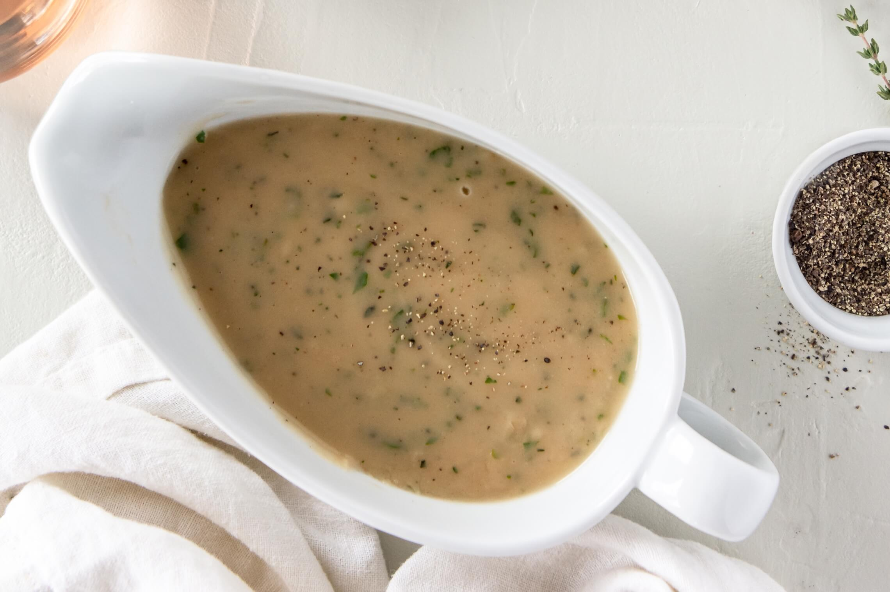

Gravy

What's a delicious mash with no gravy? Sad. What's steak without a drizzle of this brown sauce of flavor? Disappointing.
If you wanted to know how to make delicious gravy for your favorite food, then you've come to the right place! Here's a list of what you're gonna need!
Ingredients
- Beef Cubes (the ones used for stock)
- Chicken Cubes (similarly, for stock)
- Milk
- Butter
- Thyme
- Oregano
- Basil
- Pepper
- Garlic Powder
- Flour
Steps
- Heat up the milk and melt the beef and chicken cubes in a pot.
- Melt the butter in the mixture and add all the herbs.
- Add in flour and mix until it thickens.
- Drink the gravy.